CC11: Bajas Temperaturas y Licuefacción de Gases
Última clase complementaria del curso. Se repasa la transición de fase con simulaciones moleculares y se recorre la historia de la criogenia: el punto crítico de Cagniard de la Tour, el enfriamiento por evaporación, el proceso en cascada con CO₂, el efecto Joule-Thomson, y la carrera por licuar hidrógeno (Dewar, 1898) y helio (Kamerlingh Onnes, 1908).
Temas que cubre
- Simulación molecular: al enfriar un gas, la correlación entre pares de partículas crece, pasando por gas → líquido → sólido
- El punto crítico (Cagniard de la Tour, ilustrado con metano): por encima de él no hay distinción entre líquido y gas, sólo existe un "fluido" continuo
- Enfriamiento por evaporación: las moléculas más rápidas escapan, dejando atrás a las más lentas y frías
- El proceso en cascada usando CO₂: el punto triple, el hielo seco a $-78\,°\text{C}$, y el intercambiador de calor a contracorriente
- El efecto Joule-Thomson: expansión de un gas a través de una válvula sin trabajo externo, que produce enfriamiento por un mecanismo análogo a la evaporación
- La carrera histórica por licuar hidrógeno (James Dewar, 1898) y helio (Heike Kamerlingh Onnes, 1908, a 4.2 K)
- Nota: ésta es la última clase complementaria del curso — no existe una CC12
Conceptos clave
Punto crítico
Descubierto por Cagniard de la Tour calentando un tubo cerrado con metano: existe una temperatura y presión críticas ($T_c$, $P_c$) por encima de las cuales el menisco entre líquido y vapor desaparece. Sobre el punto crítico ya no se puede hablar de "líquido" o "gas" por separado — sólo de un fluido supercrítico continuo, indistinguible en compresibilidad y ocupación de volumen.
Enfriamiento por evaporación
En un líquido, las moléculas tienen una distribución de velocidades; las más rápidas son las que logran escapar a la fase gaseosa. Al irse, se llevan más energía cinética que el promedio, dejando atrás moléculas más lentas — el líquido remanente se enfría. Es el mismo principio detrás de sudar y de los sistemas de refrigeración por evaporación.
Proceso en cascada (CO₂)
El CO₂ comprimido se enfría y, al expandirse a través de una válvula, parte se evapora y el resto se solidifica en hielo seco (pasando por su punto triple), alcanzando $-78\,°\text{C}$ a presión atmosférica. Ese baño frío sirve para pre-enfriar el siguiente gas en la cascada, usando intercambiadores de calor a contracorriente para transferir frío eficientemente sin mezclar los fluidos.
Efecto Joule-Thomson
Cuando un gas real (con atracciones intermoleculares) se expande a través de una válvula o boquilla sin realizar trabajo externo útil, las moléculas deben "estirar" sus distancias promedio venciendo la atracción mutua, perdiendo energía cinética en el proceso — un mecanismo de enfriamiento análogo a la evaporación, fundamental para licuar los últimos gases conocidos (H$_2$, He).
Fórmulas fundamentales

Qué hay que entender
- El punto crítico no es una curiosidad matemática: es la razón por la que ciertos gases (como el CO₂ a temperatura ambiente) pueden licuarse con sólo aumentar la presión, mientras que otros (H₂, He) tienen temperaturas críticas tan bajas que deben enfriarse primero antes de poder comprimirlos hasta licuarlos.
- El enfriamiento por evaporación y el efecto Joule-Thomson comparten la misma idea física de fondo: quitar de un sistema las partículas (o el "trabajo interno" contra la atracción mutua) que llevan más energía que el promedio, reduciendo así la energía media de lo que queda.
- El proceso en cascada ilustra una estrategia general en física experimental: cuando no se puede alcanzar una temperatura objetivo de un solo paso, se construye una secuencia de baños cada vez más fríos, cada uno usado para pre-enfriar el siguiente.
- La carrera histórica (Dewar con hidrógeno en 1898, Kamerlingh Onnes con helio en 1908 a 4.2 K) no fue sólo una competencia: cada hito requirió inventar nueva tecnología (como los matraces Dewar de doble pared, hoy "termos") que luego se volvió indispensable para toda la física de bajas temperaturas posterior.
- Esta es la última clase complementaria del curso: no existe una CC12. El curso continúa únicamente con las cátedras de síntesis y movimiento browniano (Cátedra 28).